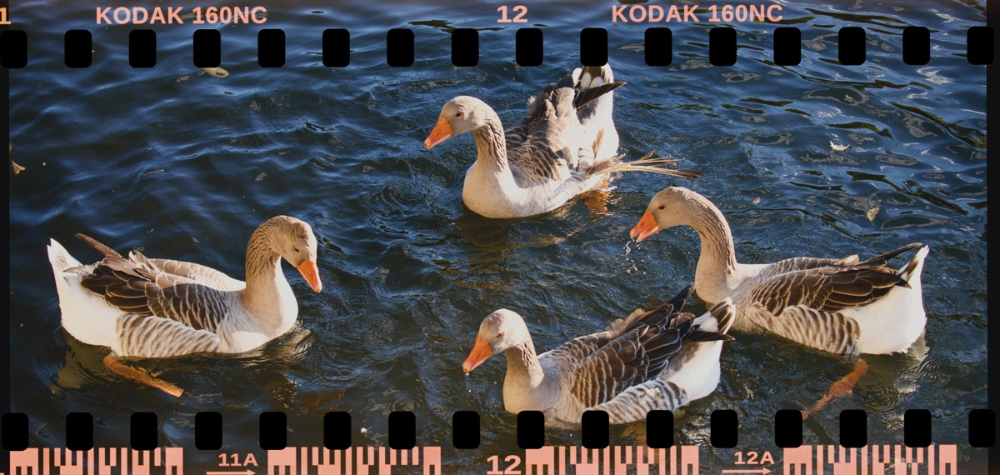

选择胶片与相纸
探索彩色负片、反转片、黑白胶片与相纸的不同表现，收藏喜欢的组合，设为新照片的默认选择。
打开一张 RAW，选择喜欢的胶片和相纸。
从光到色彩，让每一张照片慢慢显影。

胶片的色彩、颗粒和片边，都可以由你选择。把数字照片交给一套以胶片与相纸为基础的冲印流程。
探索彩色负片、反转片、黑白胶片与相纸的不同表现，收藏喜欢的组合，设为新照片的默认选择。
调整颗粒、光晕与漏光，让影调和细节保留属于胶片的层次。
选择画幅，加入齿孔、片边字和日期后背，让照片从画面延伸到片边。
从打开照片、挑选胶片，到打样并导出，在一个窗口里完成。
为 Windows 摄影爱好者打造的开源胶片冲印工具。
这是测试版本，部分功能与导出流程仍在验证。安装包尚未签名，Windows 可能显示未知发布者提示。